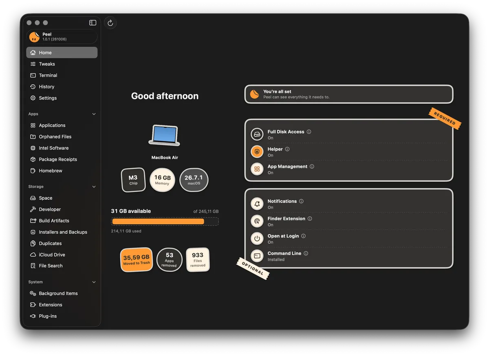
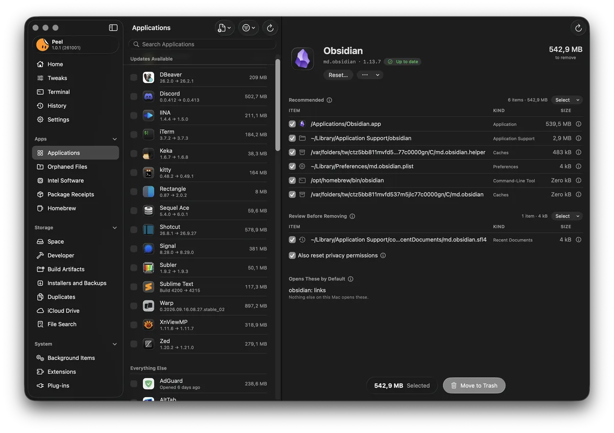
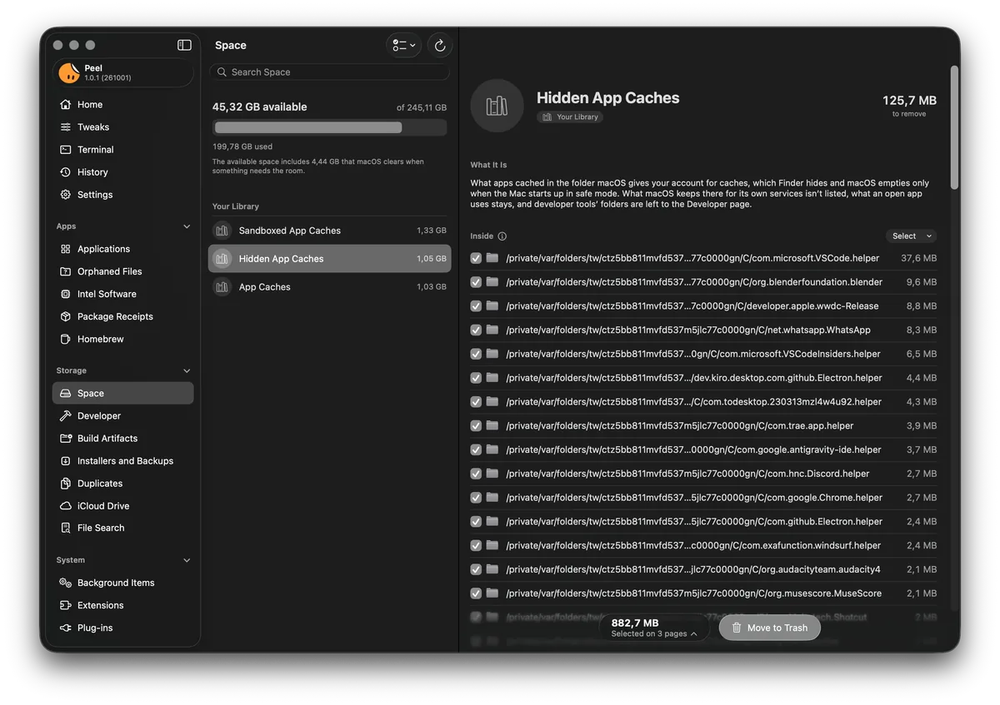
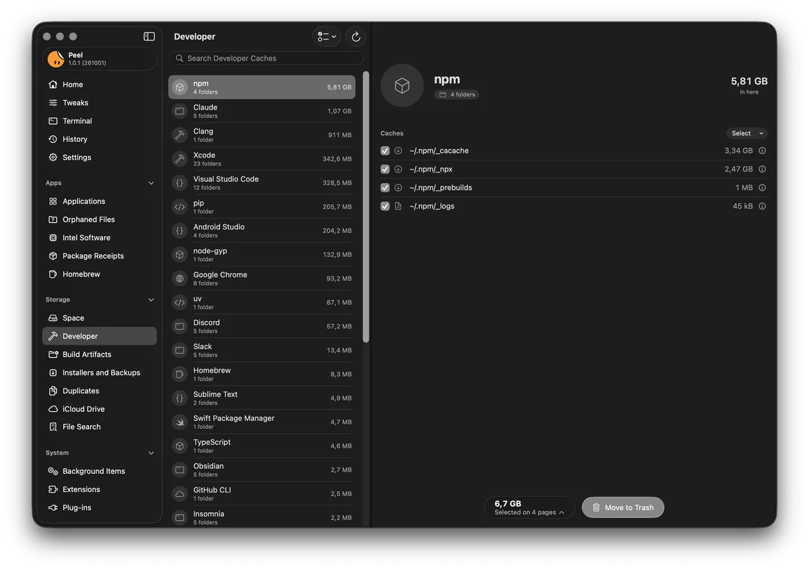
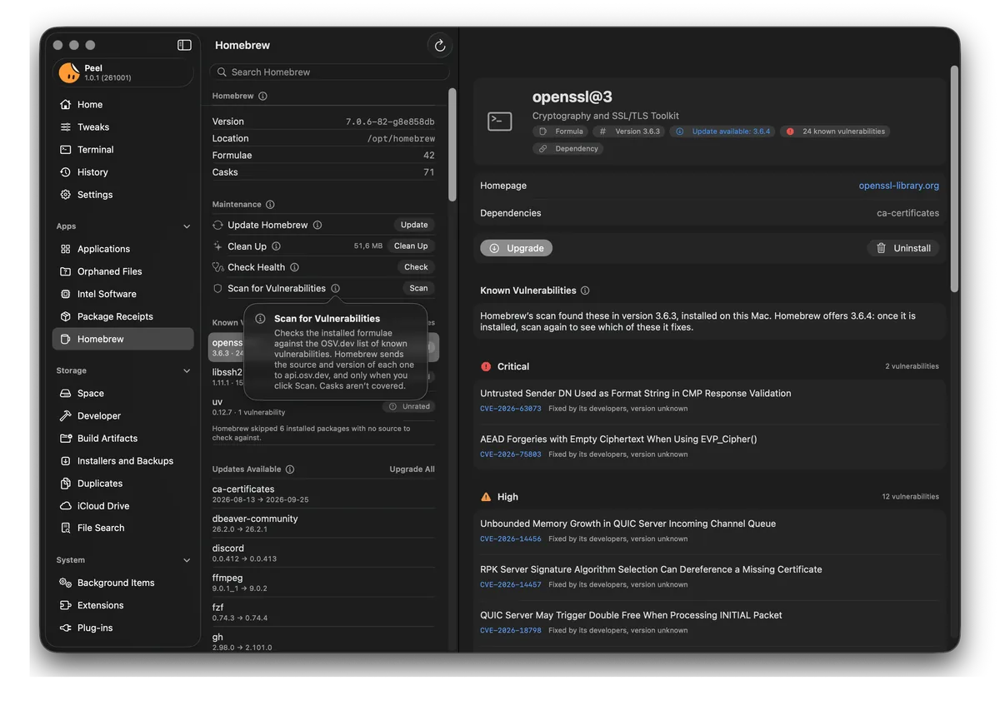
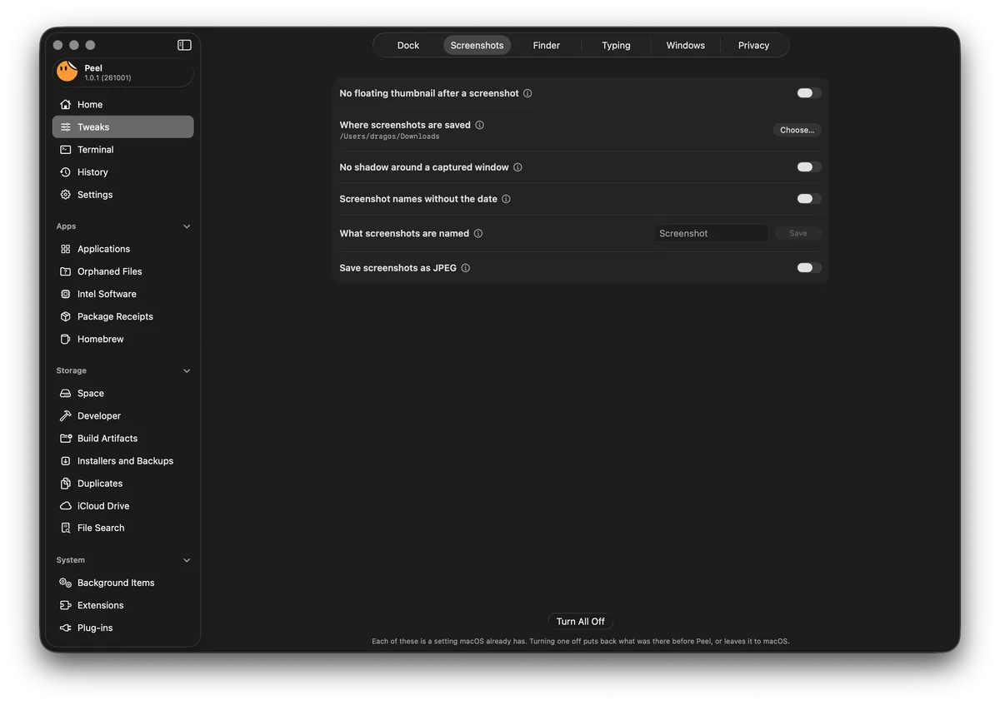
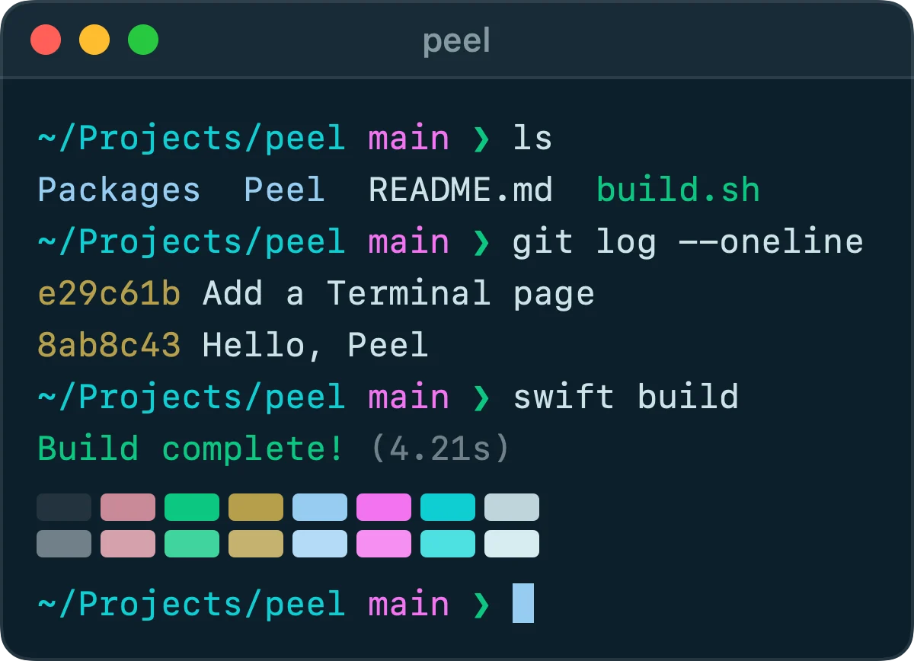
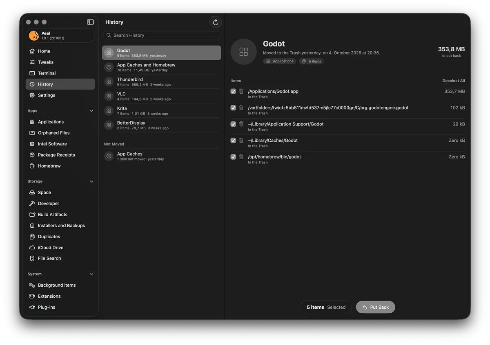
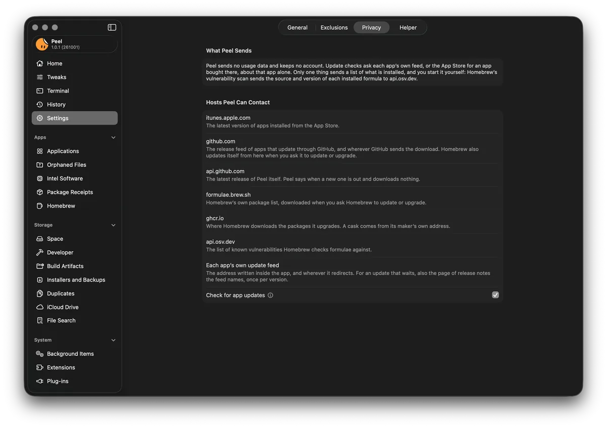

Free and open source.
No paid edition, no ads, and no account. Nobody can take Peel, close it, and sell it as their own.
And see why every file belongs to them.
A free, open source uninstaller and cleaner for macOS, which also fine-tunes your Mac and sets up Terminal.
macOS Tahoe 26 or later · Apple silicon and the Intel Macs macOS 26 supports
Signed by Dragos-Constantin Tugui (6R6J264YA2) and notarized by Apple
brew install --cask tuguidragos/tap/peel

Dragging an app to the Trash leaves pieces of it behind. Caches, settings, containers, launch agents, and support files, scattered across your Library, sometimes gigabytes of them. Peel finds what an app left, tells you why each file belongs to it and how sure it is, and moves what you choose to the Trash.
No paid edition, no ads, and no account. Nobody can take Peel, close it, and sell it as their own.
What Peel removes goes to the Trash, and History puts it back where it was. The few exceptions are named before you confirm.
English and 17 other languages, in the words macOS itself uses.
Settings macOS already has, many of them out of sight, each one explained.
29 dark themes, a prompt, and switches for settings zsh, Git, and ssh already have.
On its own, Peel goes online only to check your apps, and itself, for updates, and you can turn that off.
On every Mac that runs macOS Tahoe 26 or later, and every release is tested by hand before it ships.
Uninstall
Peel searches the places apps keep files, and gives each one the reason it matched, such as the app’s bundle identifier, its signing team, or a Homebrew cask that names it.

What Peel finds to be the app’s alone is selected for you, unless it has a reason to hold it back, such as something inside that may exist nowhere else. A file another app also uses is shown, but never selected for you.
What Peel is less sure of, what another app also uses, and what Peel holds back wait there, and the note beside each file says why.
Choose an app in the list, drop one on Peel’s Dock icon, or Control-click it in Finder and choose Uninstall with Peel, once the Finder extension is on in System Settings.
Make an app forget its settings without uninstalling it. Peel copies them first, so you can put them back.
Peel checks each app through its own update feed, the App Store for apps bought there, or Homebrew for apps it installed, and shows what’s new.
Turn it on and allow its notifications. While Peel is open or in the menu bar and has Full Disk Access, an app you drag to the Trash yourself brings a notification that takes you to what it left behind.
Space
How full your disk is, then the places that take the most room, each with a note on what it is. What you select stays selected while you look at the other pages, iCloud Drive aside, and Move to Trash moves it all at once, as one entry in History.

Files left behind by apps you already removed, which no app on this Mac claims.
What builds left in your projects, like node_modules, DerivedData, or target, each only when its tool’s own file proves it.
Files and whole folders with identical contents, compared with SHA-256. One copy is always kept.
App installers in Downloads, Desktop, Documents, Public, and Shared, macOS installers, device firmware, unfinished downloads, updates waiting to install, and what your iPhone and iPad backups hold. A disk image may be one you made, so nothing is selected for you.
Files already safe in iCloud that are also downloaded to this Mac. Remove Downloads takes away only the copy on this Mac.
Large or old files, found through Spotlight by name, kind, or size, and narrowed by age.
Developer
What each of your developer tools keeps. What you may want again is listed but never selected for you, and toolchains or anything holding an account are never listed.

System
See what runs in the background and, where Peel can tell, which app added it. Find what still needs Rosetta, and keep Homebrew up to date, clean, and checked for known vulnerabilities.

Tweaks
40 settings macOS already has, many of them out of sight. Each tweak says what it changes, and turning it off puts back what was there before, or leaves it to macOS.

Terminal
Choose a theme and a prompt, and turn on settings zsh, Git, and ssh already have, each with its own switch. There are 29 dark themes, all built on Apple’s own Clear Dark.

Hadal
Choose one, and Terminal opens with it in every new window. Put Back gives Terminal the profile it had before.
Leave out the “Last login” line, keep Terminal from reopening its windows, and in the Peel theme you use, make Option the Meta key and silence the bell.
Use Peel’s prompt or keep the one you have, and turn on what zsh already has, like history shared between windows.
Turn on what Git already has, like rebase when pulling. Turn All Off puts back what Peel changed, and returns the rest to Git’s defaults.
Keep connections alive, and more of what ssh already has, each with a switch.
Command-line tools worth having, with the Homebrew command and what each needs after, such as the lines to add to ~/.zshrc.
Nothing of yours is deleted without asking first. What Peel removes goes to the Trash, and History puts it back where it was.

Only four things Peel starts can’t be put back that way: Homebrew’s own uninstall and cleanups, resetting an app’s privacy permissions, and Force Quit for an app that won’t quit. Peel says so before you confirm them, and warns before it moves an app that deletes its own settings when it goes, like Mullvad VPN.
iCloud Drive, keychains, your SSH and signing keys, the keys of crypto wallets, Mail, Messages, Safari, Contacts, Calendars, Notes, photo and music libraries, iPhone and iPad backups, and the Desktop, Documents, and Downloads folders themselves. No selection can override it.
A browser profile holding a wallet extension Peel knows, or Brave’s own wallet, stays where it is, so uninstalling a browser never takes the wallet with it.
Peel looks at each item once more right before it moves, so something swapped in the meantime stays where it is.
Nothing you exclude is ever moved, and neither is a folder holding something you excluded. An excluded app still appears in Applications but gets no removal plan, and the folders named with its identifier, such as its caches, leave every page. To keep its other files, exclude them too.
When Peel holds a file back, the row says why. A folder it couldn’t measure or read is shown as unknown, never as empty.
Privacy
On its own, Peel goes online only to check your apps, and itself, for updates, and you can turn that off. Each check asks about one app alone, through its own update feed or the App Store, and doesn’t send its version, your macOS, or your languages; the App Store is told only your Mac’s region. Release notes are asked for in your language when the feed offers them in several.
Settings > Privacy shows what Peel sends, and every address it or Homebrew may contact.

The peel command
Every command that moves your files asks first, and takes --dry-run to only show the plan. What it moves goes through the same checks as in the app, into the same History.
peel leftovers Obsidianpeel uninstall Obsidian --dry-runpeel orphanspeel duplicates ~/Downloadspeel historypeel restore <id>Languages
Peel uses the first language in your Mac’s list that it speaks, in the words macOS itself uses in that language.
Peel is a free, open source app for macOS that uninstalls apps together with the files they leave behind, and tells you why each file belongs to the app. It also frees disk space, looks after Homebrew and what runs in the background, changes settings macOS already has, many of them out of sight, and sets up Terminal.
Open Peel, choose the app under Applications, look over what Peel found, and click Move to Trash. The app and its leftovers go to the Trash together, and History can put them back. You can also Control-click the app in Finder and choose Uninstall with Peel, once the Finder extension is on in System Settings.
Peel moves files to the Trash instead of deleting them, and History can put them back while they’re still there. What can’t be undone, such as Homebrew’s own uninstall, Peel names before you confirm it. It never selects a file another app uses, and refuses to move iCloud Drive, your keychains, Mail, Messages, and photo libraries.
Peel shows what moving an item to the Trash would free, and Finder shows the space it takes. The two differ when files share their space: a copy Finder makes on an APFS disk shares its blocks with the original until one of them changes, and a file can have a second name somewhere else, which keeps it. Peel counts only what would really go.
macOS keeps other apps’ data, and the Trash, out of sight of any app without it. Peel works without it, but can’t see everything an app leaves behind.
No. Peel has no analytics and no account. On its own, it goes online only to check your apps, and itself, for updates, which you can turn off. Homebrew goes online when you ask it to do something.
Yes. Peel is free and open source under the GNU General Public License, version 3 or later, with no paid edition, no ads, and no account.
Yes. Run brew install --cask tuguidragos/tap/peel in Terminal. It installs the same release as the download on this page.
Run spctl -a -vv /Applications/Peel.app in Terminal. A copy I built answers accepted, with source=Notarized Developer ID and origin=Developer ID Application: Dragos-Constantin Tugui (6R6J264YA2). If it names anyone else, or isn’t accepted, it didn’t come from me: move it to the Trash and download Peel again from github.com/TuguiDragos/Peel.
Peel runs on macOS Tahoe 26 or later, on any Mac that runs it: every Mac with Apple silicon, and the few Intel Macs from 2019 and 2020 that Apple lists for macOS 26. It doesn’t run on earlier versions of macOS: each version moves where apps keep their files, so every release is tested by hand before it ships, on macOS 26 and every version since.
In Settings > General, choose Remove Peel. Peel removes its helper and its login item, moves itself, the files that are certainly its own, and its folder in Application Support to the Trash, all but the Terminal settings zsh and ssh read, and clears its settings. What you set in Tweaks and on the Terminal page stays as it is. If you installed it with Homebrew, Settings shows the Homebrew command to run instead.
Free and open source, under the GNU General Public License.
macOS Tahoe 26 or later · Apple silicon and the Intel Macs macOS 26 supports
brew install --cask tuguidragos/tap/peel
Peel is published in one place only: github.com/TuguiDragos/Peel. Every download on this page leads there. Any other site, download page, or store offering Peel is not mine, and what it gives you may not be the app I build and sign. Peel is free, so anyone asking you to pay for it is not me.